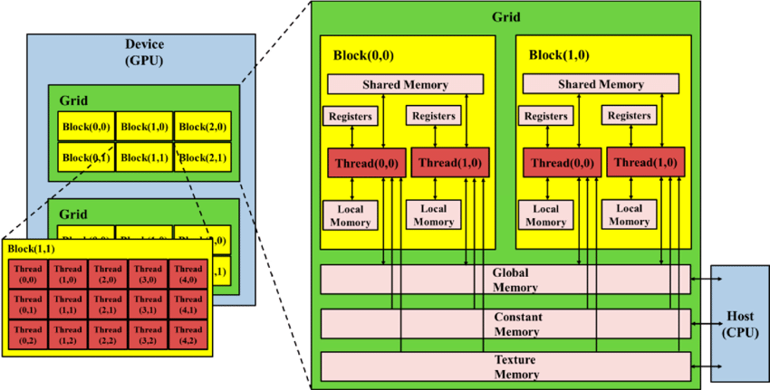
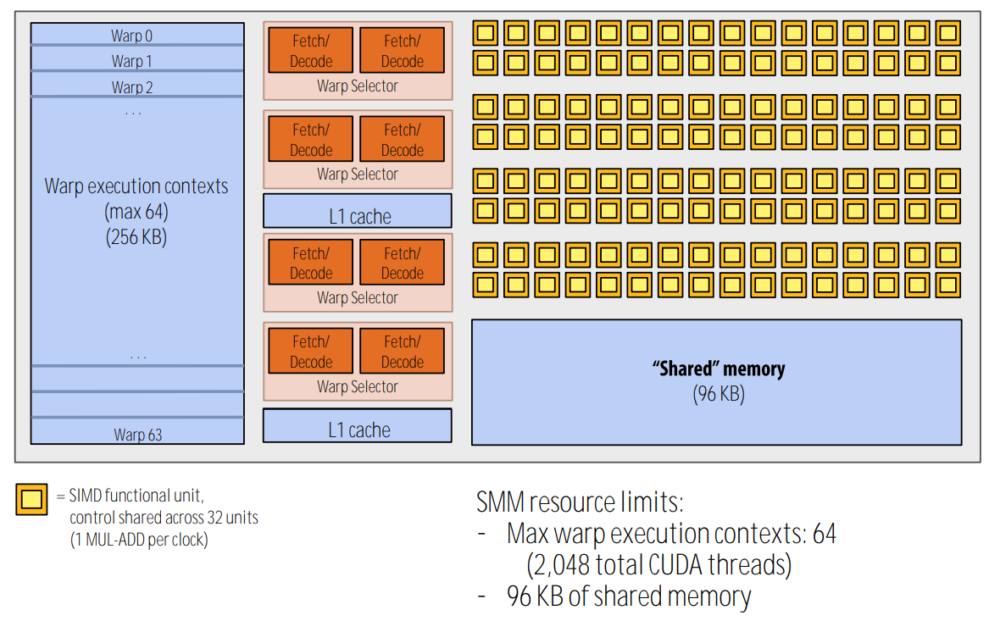
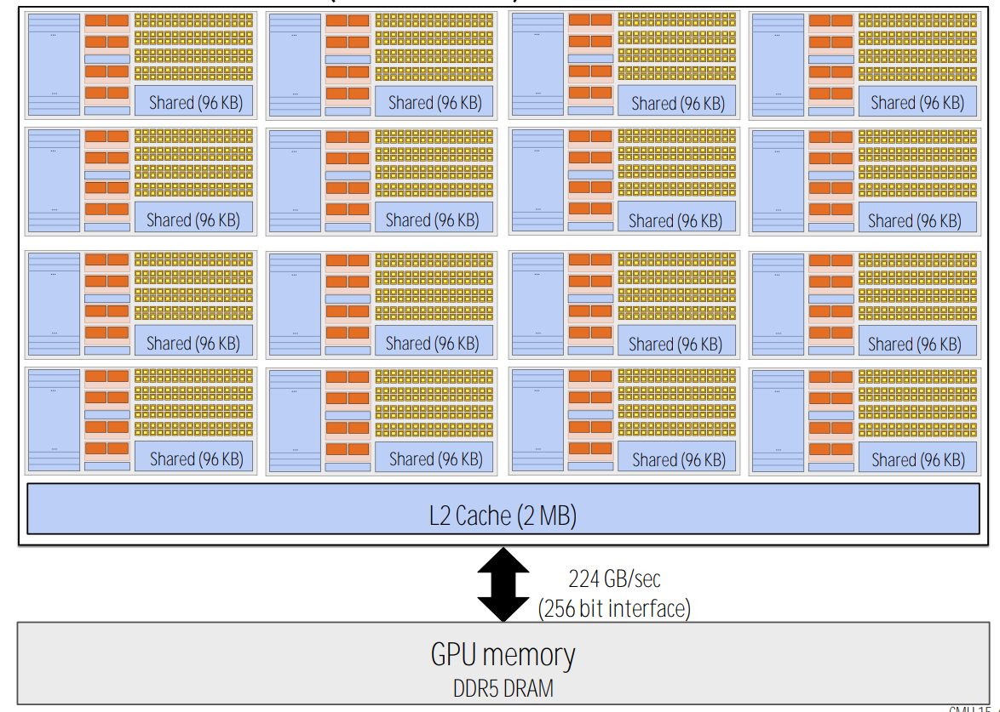
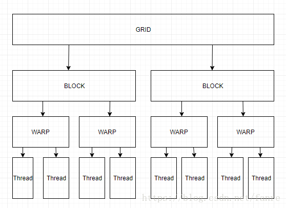

GPU/CUDA programming models
The last preparation of CUDA programming, two key points of CUDA programming are introduced.
All the pics and contents are not original. The contents of the whole series are mainly collected from:
| Outline |
|---|
| CPU GPU interaction model |
| GPU memory model |
| GPU threads organization model |
| Programming model |
CPU-GPU communication

Physical memory space for each device, communicated through PCIE IO with a bandwidth of (8~16 GB/s)
There are 2 standards for memory, DDR has low latency, HBM has high bandwidth.
Most commonly used GPU memory standard is GDDR. For CPU memory, DDR is commonly used.
GPU memory hierarchy

Register - dedicated HW -single cycle
Shared Memory - dedicated HW - single cycle
Local Memory - DRAM (obstruct memory, actually saved in graphic memory), no cache - slow
Global Memory - DRAM, no cache - slow
Constant Memory - DRAM, cached - 1...10s...100s of cycles ,depending on cache locality
Texture Memory - DRAM, cached - 1...10s...100s of cycles ,depending on cache locality
Instruction Memory (invisible)- DRAM, cached
In reality:


GPU thread hierarchies

Grid >> Block >> Thread
One block contains several threads, one grid contains several blocks.
Note: It is all obstruct concepts, how many threads or blocks is depends on the programmer.
When running one program, also called Kernel, a Grid is activated, containing several Blocks. Inside one block, there is one Shared Memory and several Threads that can read the shared memory and synchronize _syncthreads_.
thread mapping to the memory
- grid <-> Device
- block <-> SM
- thread <-> ALU
In terms of CPU, there is a similar mapping:
grid <-> multi core
block <-> vector SSE
thread <-> scalar SSE
software thread memory accessibility
Every thread has a Local memory,
every block has a shared memory
there is a global memory available for all the kernels/grids
there is a constant memory available for all the kernels/grids, READ ONLY for the kernels but RW for the host (CPU).
there is a host memory available for all the devices, if multiple devices are connected with the host.
note that traditionally, the kernels are running in serial for each device, so that the kernel can get access to one global memory. But modern devices supports multiple kernels running parallel. The global memory will be divided for each kernels.
Programming model
Concepts
Conventionally GPU is used for graphic processing, processing pixels and pixel blocks. The instructions on each pixels are the same, naturally parallel. So its suitable for SIMD.
SIMD (Single Instruction Multiple Data)
- Vector divided into pieces and run the same instruction
SIMT (Single Instruction Multiple Thread)
SIMD is kind of a low-level concept, SIMT is slightly higher level, but logically they are identical.
same instruction for multiple thread
GPU version of SIMD
massive threads model gives high parallelism
tread switch gives latency hiding
Programming language: Extended C
Decorated C language.
- Declspecs:
- global,device,shared ,local, constant
- different memory places
- global,device,shared ,local, constant
- Keys
threadIds,blockIdx, indexes for threads and blocks
- Intrinsics
__syncthreads
- APIs
- Memory ,symbol, execution, management
- Calling functions
- need to tell the CPU how many blocks and threads are needed for one instruction
CUDA Declarations
| Operating Location | Calling Location | |
|---|---|---|
__device__ float DeviceFunc() |
device | device |
__global__ void KernelFunc() |
device GPU | host |
__host__ float HostFunc() |
host CPU | host |
__global__ defines a kernel function
- Entrance function, calling by CPU running on GPU
- Must return
void - Need to define the number of blocks for each kernel, and number of threads for each block
__device__ and __host__ can be used together for one function
- when same operation for both device and host
- the indexing need to be careful when calling this kind of function
Copyright: This blog is provided under a CC BY-SA 4.0 licience